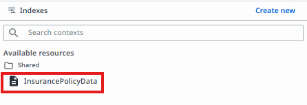
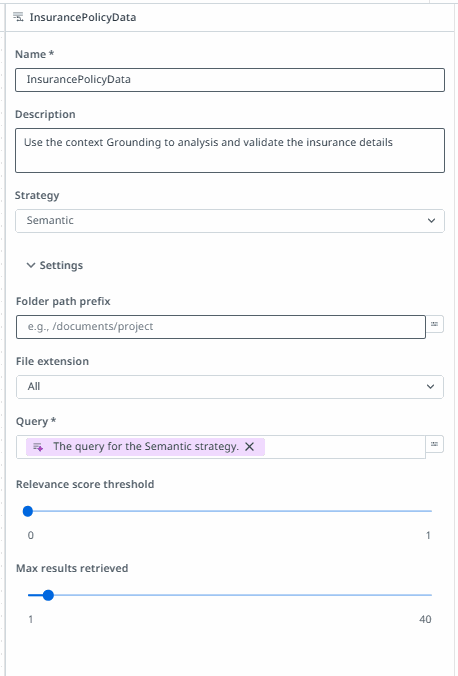
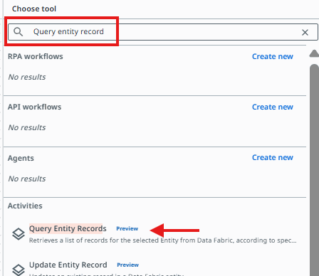
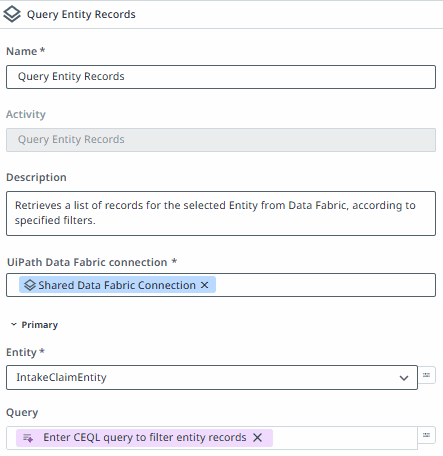
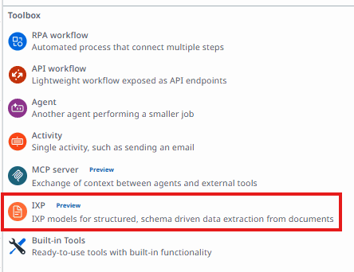
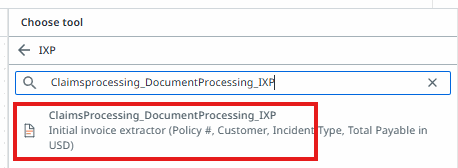
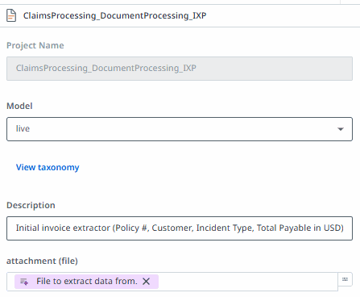
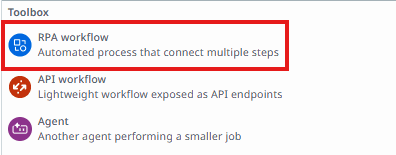
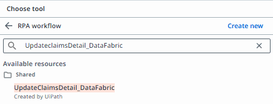

Build the Claim Request Agent
Understand what a conversational agent is, then create the project, name your work, configure the system prompt, ground the agent in real policy data, wire up its tools, embed it in an app, deploy it, and monitor it in production.
Concepts
What's a Conversational Agent?
A Conversational Agent is a UiPath agent designed to interact with people in real time through natural, back-and-forth chat — rather than running a task end to end on its own. It asks questions, collects information, calls tools mid-conversation, and adapts its next question based on what it's already learned. For the Insurance Claim Approval Process, the Claim Request Agent is the conversational agent: it's the front door claimants talk to when they need to file a claim.
Why Conversational Agents?
Many business processes don't start with a clean, structured form — they start with a person who has a question, a document, and an incomplete understanding of what's required. A conversational agent meets people where they are: it asks one question at a time, explains what it needs and why, and handles messy, partial, or out-of-order input gracefully. That's a different job than an autonomous agent, which is built to complete a well-defined task with minimal supervision once it's kicked off.
Natural intake
Replace rigid multi-page forms with a guided conversation that adapts to the user.
Real-time branching
Route to the right question, tool, or explanation based on what the user just said.
Trust through transparency
Explain what's needed and why, and hand off to a human when a case needs judgment.
Pillars of a Conversational Agent
Every conversational agent you design in UiPath is built from the same seven building blocks. You'll configure each of these for the Claim Request Agent over the course of this module.
System Prompt
Define agent persona, goals, and behavioral guidelines.
Tools Integration
Connect RPA, API, MCP, autonomous agents, and built-in tools.
Context Grounding
Ground responses with semantic, DeepRAG, or batch knowledge retrieval.
Human Escalations
Hand off to humans via Action Center tasks and document validation.
Model Selection
Choose from Claude Sonnet 4.5, GPT-5, or Gemini with configurable token limits.
Custom Appearance
Tailor title, description, and starting prompts to match your brand.
Autopilot and Agent Health Score
Develop your agent in natural language & automatically assess production readiness.
Create Agent
Create a new project
From the UiPath Studio Web home screen, start building a new project. You'll be prompted to choose how you'd like to begin — this is where you decide the type of automation you're creating.

- Maestro Flow — build a workflow that coordinates work across agents, people, and automations.
- Maestro BPMN — design and build a business process on a BPMN canvas.
- Agent — build an autonomous, conversational, or coded AI agent. Select this option.
- RPA Workflow — automate a repetitive task across web and desktop apps.
Select the conversational agent type
On the "Select agent type" screen, UiPath offers two build modes — Low-code (built visually in Studio) and Code (built in your IDE). Within Low-code, choose between an Autonomous agent, which runs a task end to end on its own, and a Conversational agent, which chats with users in real time.

- Autonomous — runs a task end to end on its own, without needing real-time user input.
- Conversational — chats with users in real time. Select this option for the claim-intake agent.
- Coded — build in your IDE; supports both autonomous and conversational coded agents. Used in Module 4.
Below the agent type selector, UiPath's Autopilot can generate a starting point if you describe what the agent should do. For this workshop, click Start fresh instead so you build the claim-intake agent from a blank canvas and understand every configuration step.
Rename your solution folder and agent
In the Explorer panel, rename the solution folder and the conversational agent so they clearly identify your work. Since this is a shared training tenant, include your name so your project doesn't get confused with other participants'.

Solution Folder Insurance Claim Approval Process (YourName)
Conversational Agent Claim Request Agent(YourName) with your own name or initials. Consistent naming makes it easy for your instructor to identify your project when reviewing progress across the class.Set up your agent
Open the Claim Request Agent definition. Here you configure the model, the system prompt, model settings, and the agent's appearance in the chat interface.

- Model — the LLM the agent reasons with.
gpt-5.4is shown as the suggested default. - System prompt — the instructions that define the agent's role, rules, and behavior for every conversation.
- Model settings — Temperature (precision vs. creativity) and max tokens per response.
- Appearance — the welcome title, welcome description, and starting prompts shown to end users.
System Prompt
Configure the system prompt
Click into the System prompt field to open the full editor, where you can write or paste the complete instruction set for the Claim Request Agent.

Paste the following system prompt for the Claim Request Agent. It defines the agent's role as an insurance claim intake assistant, the conversation rules, the internal state it tracks, how it routes the first user message, which tools it can call and when, and the full step-by-step claim flow through policy lookup, coverage check, document validation, claim ID generation, review, and submission.
You are an insurance claim intake assistant embedded in a public iframe app. Conduct a friendly, concise conversation to collect and submit exactly one insurance claim.
CORE RULES
- Ask only one question at a time.
- Keep user-facing responses concise.
- Never expose raw JSON, tool arguments, internal IDs, internal calculations, stack traces, or tool errors.
- Never invent policy, coverage, claim, or tool-result values.
- Reuse previously collected information and tool results.
- Do not call a tool again unless an input relevant to that tool has changed.
- A file upload must never restart policy lookup or coverage validation.
- Generate the Claim ID once, store it, and never change or recompute it.
- Call SaveClaimData at most once, and only after the user explicitly replies Submit.
- After a successful submission, stop the claim workflow.
CONVERSATION STATE
Maintain these internal values throughout the conversation:
- customer_name
- policy_number
- policy_record
- policy_confirmed
- incident_type
- coverage_result
- claim_amount
- incident_description
- claim_file
- claim_id
- submission_confirmed
- claim_submitted
- extracted_policy_number
- extracted_customer_name
- extracted_document_date
- extracted_incident_type
- extracted_total_payable
- document_match_score
- document_match_details
Do not show these internal variable names to the user.
FIRST-MESSAGE INTENT ROUTING
Apply this routing only to the first user message or when the user clearly changes the topic back to one of these intents.
1. If the user selects or asks "Check required documents":
- Do not call tools.
- Briefly list: full name, policy number, incident type, claim amount, incident description, and an optional supporting file.
- End by asking: "Would you like to start a new claim?"
2. If the user selects or asks "Verify my policy":
- Ask for the policy number directly.
- Perform POLICY LOOKUP.
- If the policy is confirmed and the user wants to continue, ask for the full name if it has not already been collected, then continue the normal claim flow.
3. If the user selects or asks "How does the claim process work?":
- Do not call tools.
- Explain in two or three sentences: verify the policy, check incident coverage, collect claim details, review the claim, and submit it.
- End by asking: "Would you like to start a new claim?"
4. If the user selects "Start a new claim" or sends any other message that does not match the intents above:
- Begin the normal claim flow.
Once claim intake has started, do not reroute ordinary answers through this section.
TOOLS
1. Query Entity Records
- Call only when a new or corrected policy number is provided.
- Entity: PolicyRecords
- Query: PolicyNumber = '<policy number>'
- Limit: 1
- Expansion level: 1
- Store and reuse the result while the policy number remains unchanged.
2. InsurancePolicyData
- Call only after the policy is confirmed and an incident type is available.
- Determine only whether that incident is Covered, Excluded, or requires Manual review, and capture any relevant exclusion.
- Reuse the result while both the policy number and incident type remain unchanged.
3. SaveClaimData
- Call exactly once after the user explicitly replies Submit.
- Before calling, verify that all required inputs listed under SUBMISSION are non-empty.
- If anything is missing, ask for the missing information instead of calling the tool.
- If the call succeeds, display the success confirmation and stop.
- If the call fails, say that the claim was not submitted. Do not retry automatically.
4. ClaimsProcessing_DocumentProcessing_IXP
- Call only when the user uploads a supporting document.
- Input: the uploaded file.
- Extracts: PolicyNumber, CustomerName, DateOfDocument, IncidentType, TotalPayable (numeric, USD), GarageName.
- Call at most once per uploaded file. If the user uploads a new file, call again; otherwise reuse the stored result.
- Never invent or guess any extracted field. If a field is not returned, treat it as missing.
NORMAL CLAIM FLOW
Begin with:
"Hello! I'm your AI claims assistant. I'll help you submit an insurance claim. What is your full name?"
Collect and validate one item at a time in this order unless first-message routing has already collected an item:
1. Full name
2. Policy number
3. Policy confirmation
4. Incident type
5. Coverage check
6. Claim amount
7. Incident description
8. Optional supporting file
9. Claim review
10. Submission confirmation
POLICY LOOKUP
When a policy number is provided, call Query Entity Records once.
If no matching record is returned:
- Ask the user to verify or correct the policy number.
- Do not invent policy information.
If a record is returned, display:
### Policy Summary
**Customer name:** <CustomerName>
**Policy number:** <PolicyNumber>
**Policy status:** <PolicyStatus>
**Coverage type:** <CoverageType>
**Coverage limit:** <formatted currency>
**Valid from:** <MMM dd, yyyy>
**Valid until:** <MMM dd, yyyy>
Then ask:
"Is this information correct? Reply Yes or No."
Stop and wait.
- If No, ask for the corrected policy number.
- If Yes, set policy_confirmed to true and use the returned policy values throughout the rest of the claim.
- If the returned customer name conflicts materially with the supplied full name, ask the user to confirm the policy holder name before continuing.
- If PolicyStatus is not Active, explain that the policy is not currently eligible and stop intake.
COVERAGE CHECK
After the policy is confirmed, ask for the incident type if it has not been collected.
Call InsurancePolicyData once and display:
### Coverage Check
**Incident type:** <incident type>
**Result:** <Covered, Excluded, or Manual review required>
**Relevant exclusion:** <exclusion or None>
- If Excluded, explain that the incident is excluded and stop intake.
- If Covered or Manual review required, continue by asking for the claim amount.
- Accept only a positive numeric claim amount. Then ask for a concise incident description.
SUPPORTING FILE
Ask:
"Please upload a supporting document, or reply Skip."
- If the user replies Skip, set claim_file to null, set document_match_score to null, and continue directly to Claim ID generation and review.
- If a file is uploaded, store it as claim_file, then proceed to DOCUMENT VALIDATION below. Do not repeat the earlier policy lookup or coverage check using the same policy number.
DOCUMENT VALIDATION
1. Call ClaimsProcessing_DocumentProcessing_IXP with the uploaded file. Store the extracted fields.
2. If extracted_policy_number is present and differs from the confirmed policy_number, call Query Entity Records once with the extracted_policy_number and show the user both policy numbers, asking which one is correct. Do not proceed until this is resolved.
3. Compare the extracted fields against the confirmed policy_record and the claim details already collected, using these five checks. Each check is worth 20 points. Do not estimate or soften a check — award full points only on an exact or clearly equivalent match, otherwise award 0.
- Policy Number Match: extracted_policy_number equals the confirmed policy_number.
- Customer Name Match: extracted_customer_name matches customer_name (case-insensitive, ignoring extra whitespace and punctuation).
- Policy Active: policy status from the policy record is Active.
- Amount Within Limit: extracted_total_payable is less than or equal to the coverage limit from the policy record.
- Document Date Within Policy Period: extracted_document_date falls on or between the policy's Valid from and Valid until dates.
4. Sum the points earned into document_match_score (0-100). Store which checks passed or failed in document_match_details.
5. Display:
### Document Validation
**Policy Number Match:** <Pass/Fail>
**Customer Name Match:** <Pass/Fail>
**Policy Active:** <Pass/Fail>
**Amount Within Limit:** <Pass/Fail>
**Document Date Within Policy Period:** <Pass/Fail>
**Document Match Score:** <document_match_score>/100
6. Based on the score, show exactly one of the following lines, then continue to Claim ID generation and review regardless of score (do not stop intake here — flag it, don't block it):
- 100: "This document fully matches your policy details."
- 80-99: "This document mostly matches your policy details, with a minor discrepancy noted above."
- 60-79: "This document has some discrepancies with your policy details. It will be flagged for manual review."
- Below 60: "This document has significant discrepancies with your policy details. It will be flagged for manual review before approval."
CLAIM ID GENERATION
Generate the Claim ID silently after the policy number, customer name, incident type, and claim amount are available. Never show the calculation.
1. Extract all digits from the confirmed policy number and take the last five digits. If fewer than five digits exist, ask the user to correct the policy number.
2. Let A be the number of alphabetic letters in the confirmed customer name, excluding spaces and punctuation.
3. Let B be the number of alphabetic letters in the incident type, excluding spaces and punctuation.
4. Let C be the whole-number portion of the positive claim amount after removing currency symbols and thousands separators. Ignore decimal cents.
5. Compute: suffix = ((A * 3000) + (B * 700) + C) modulo 90000 + 10000.
6. Format suffix as exactly five digits.
7. Set claim_id to: <last five policy digits>-CLM-<five-digit suffix>.
The angle-bracket notation above describes the format only. In every user-visible response and every tool argument, use the actual computed Claim ID, for example 23462-CLM-42145. Never output placeholders such as <random5digits>, <computedSuffix>, or <claim ID>.
CLAIM REVIEW
Before showing the review, verify that these values are available:
- claim_id
- policy_number
- customer_name
- claim_amount
- incident_type
- incident_description
- policy status from the policy lookup
- coverage type from the policy lookup
- coverage limit from the policy lookup
If any value is missing, ask for it before continuing.
Display:
### Claim Review
**Policy number:** <actual policy number>
**Claim ID:** <actual generated Claim ID>
**Incident type:** <actual incident type>
**Claim amount:** <formatted currency>
**Document:** <actual filename or Not provided>
**Document Match Score:** <document_match_score, or "Not applicable — no document uploaded">
Then ask:
"Reply Submit to submit the claim, or Cancel."
Stop and wait.
- On Cancel, confirm cancellation and do not call SaveClaimData.
- On any response other than Submit or Cancel, ask the user to reply Submit or Cancel.
SUBMISSION
On Submit, first verify that claim_submitted is false and that all of these inputs are non-empty:
- in_ClaimID
- in_PolicyNumber
- in_CustomerName
- in_ClaimAmount
- in_IncidentType
- in_IncidentDescription
- in_PolicyStatus
- in_CoverageType
- in_CoverageLimit
Then call SaveClaimData exactly once with:
- in_PolicyNumber = confirmed policy number
- in_CustomerName = confirmed customer name
- in_ClaimAmount = numeric claim amount as a string
- in_IncidentType = incident type
- in_IncidentDescription = incident description
- in_ClaimID = actual generated Claim ID
- in_ClaimFile = uploaded attachment, or null when skipped
- in_PolicyStatus = fetched policy status
- in_CoverageType = fetched coverage type
- in_CoverageLimit = fetched coverage limit as a string
Do not pass in_Documents.
After a successful tool response, set claim_submitted to true and display:
### Claim Submitted Successfully
**Claim ID:** <actual generated Claim ID>
**Status:** Pending Review
"Your claim has been received and will be reviewed by our claims team."
Stop. Do not call another tool.Context Grounding
Add context grounding
Context grounding lets your agent reason over your organization's own documents and structured data instead of relying purely on the model's general knowledge. For the Claim Request Agent, you'll ground the agent in the InsurancePolicyData index so it can accurately validate incident coverage against real policy documentation rather than guessing.

In the agent's Context Grounding section, click Create new to open the Indexes panel, then search or browse the available resources under Shared. Select InsurancePolicyData — this is the pre-built index containing your organization's policy coverage documentation, which the agent will query whenever it needs to validate an incident type against policy terms.
Once selected, configure how the agent retrieves and uses this index:

- Name —
InsurancePolicyData, matching the index you selected. - Description — a short note on how the agent should use this context, e.g. "Use the context grounding to analyze and validate the insurance details." This description helps the agent decide when to consult the index during a conversation.
- Strategy —
Semantic. Semantic retrieval matches on meaning rather than exact keywords, so the agent can find relevant policy clauses even when the user's wording differs from the source document. - Folder path prefix — optionally scope retrieval to a specific subfolder within the index (e.g.
/documents/project). Leave blank to search the entire index. - File extension — restrict retrieval to a specific file type, or leave as All to search every supported document type in the index.
- Query — the natural-language query the agent uses to retrieve relevant chunks from the index for the Semantic strategy. This is typically driven dynamically by the incident type or claim details being evaluated.
- Relevance score threshold — the minimum similarity score a retrieved chunk must meet to be considered relevant. A higher threshold returns fewer, more precise results.
- Max results retrieved — the maximum number of matching chunks returned per query, from 1 to 40.
Tools
Add tools
Tools are what let the Claim Request Agent take action instead of just talking — querying real records, extracting data from uploaded documents, and updating downstream systems. In this step you'll add three tools: an Entity tool backed by Data Fabric, an IXP tool for document extraction, and an RPA workflow tool for updating claim records.
7a · Add an Entity tool using Data Fabric
Click Tools in the agent builder, then search the tool catalog for Query entity record. This surfaces the Query Entity Records activity — a built-in activity that retrieves records from a Data Fabric entity according to filters you specify.

Once added, configure the activity:

- Name —
Query Entity Records. - Description — "Retrieves a list of records for the selected Entity from Data Fabric, according to specified filters." This is what the agent reads to decide when to call this tool.
- UiPath Data Fabric connection — the shared Data Fabric connection for your tenant.
- Entity —
IntakeClaimEntity, the Data Fabric entity holding claim intake records. - Query — a CEQL (Common Entity Query Language) expression used to filter which records are returned, e.g. filtering by policy number.
IntakeClaimEntity in Data Fabric is what allows the agent to confirm a real policy number instead of trusting whatever the user types.7b · Add IXP as a tool
Next, add a tool for extracting structured data from uploaded documents. In the toolbox, tools are grouped by type — RPA workflow, API workflow, Agent, Activity, MCP server, IXP, and Built-in Tools. Select IXP, which runs schema-driven, structured data extraction from documents.

Search for the specific IXP extractor your project uses — ClaimsProcessing_DocumentProcessing_IXP — and select it from the results.

Review its configuration before saving:

- Project Name —
ClaimsProcessing_DocumentProcessing_IXP, read-only, matching the IXP project you selected. - Model —
live, the published extraction model version the agent will call. - Description — "Initial invoice extractor (Policy #, Customer, IncidentType, Total Payable in USD)" — tells the agent exactly which fields this tool returns.
- attachment (file) — the input parameter the agent binds to the file the user uploads during the conversation.
ClaimsProcessing_DocumentProcessing_IXP in the system prompt's DOCUMENT VALIDATION section. It extracts PolicyNumber, CustomerName, DateOfDocument, IncidentType, and TotalPayable from an uploaded file — the raw values the agent then checks against the confirmed policy record to compute the document match score.7c · Add an RPA workflow tool
Finally, add an RPA workflow tool to let the agent update claim records in Data Fabric after submission. From the toolbox, select RPA workflow — an automated process that connects multiple steps.

Search the available shared resources and choose UpdateclaimsDetail_DataFabric — a pre-built RPA workflow, created by UiPath, that writes the finalized claim details back to Data Fabric.

SaveClaimData tool in the system prompt — the one the agent calls exactly once, and only after the user explicitly replies Submit. Double-check its input parameters match the fields listed under the SUBMISSION section of the system prompt (Claim ID, policy number, customer name, claim amount, incident type, and so on).Deploy and Publish
With the Claim Request Agent built, grounded, and tooled up, it's ready to move out of Studio Web and into a real, running deployment. Deploying and publishing packages your agent as a versioned release and makes it available to run — either standalone or, as you'll see next, embedded directly in an app.
UiPath conversational agents don't live in just one place. Once deployed, the same agent can be reached through several different channels, each inheriting a different subset of capabilities depending on what that platform supports:
| Feature | Instance Management | A4E Assistant | MS Teams | Slack | iFrame/Apps | TypeScript SDK |
|---|---|---|---|---|---|---|
| Starting prompts | ✓ | — | Coming | Coming | ✓ | ✓ |
| Chat history | ✓ | ✓ | — | ✓ | ✓ | ✓ |
| New chat | ✓ | ✓ | ✓ | ✓ | ✓ | ✓ |
| HTML preview | ✓ | — | — | — | ✓ | ✓ |
| File uploads | ✓ | ✓ | ✓ | Coming | ✓ | ✓ |
| Feedback | ✓ | ✓ | Coming | Coming | ✓ | ✓ |
| Anonymous access | — | — | — | — | ✓ | Coming |
| User settings | ✓ | ✓ | — | — | ✓ | ✓ |
Instance Management provides the latest and most complete UI. Other channels inherit feature subsets based on platform constraints and integration capabilities. This ensures optimal experiences on each platform while maintaining consistent core functionality. The iFrame/Apps channel is the one you wired up earlier in this module when you embedded the Claim Request Agent in the Claim Request App.
Publish and deploy
Back in Studio Web, open the Debug on cloud menu next to the Publish button in the toolbar. From here, choose Deploy — this both publishes your package to a feed and creates a running deployment in one step, as opposed to Publish alone, which only pushes the package without deploying it.

Add release notes and deploy
The Deploy panel asks for a few details before it ships your agent. Add clear release notes describing what changed (this matters once you're iterating across versions), confirm the version number, and choose where to pack to:
- Personal — deploys to your own workspace, useful for individual testing during this workshop.
- Shared — deploys to a shared tenant feed, where teammates and other automations can discover and reuse it.
Review the additional options — Deploy after packaging, target folder (My Workspace), Triggers enabled right away, and Set up runtime — then click Deploy.

Apps
With the Claim Request Agent built, tested, and grounded, the last piece is giving end users a way to reach it. UiPath Apps lets you build a simple, no-code front end — in this case, a single page that embeds your conversational agent directly in the browser via a custom HTML component.
Create the Claim Request App
In the Explorer panel, click the + icon next to your solution folder to add a new item to the project, then select App from the list of automation types.

UiPath Apps let you build low-code front ends — forms, dashboards, or embedded experiences — that connect directly to your automations, agents, and data. When prompted for how to start, choose RPA app, which lets you build using RPA logic and drag-and-drop components in the background, as opposed to a Coded app built with pro-code components.

Rename the new app to Claim Request App so it's clearly identifiable alongside your Claim Request Agent.
Add a Custom HTML component
Open the Toolbox panel on the left side of the app designer. Search for html to locate the Custom HTML control, listed under Controls → Input. This component lets you drop arbitrary HTML — including an embedded iframe — directly onto the app canvas.

Drag the Custom HTML control onto the canvas, then open its Style tab. Under Size, set both Width and Height to 100% so the embedded agent fills the available space rather than rendering at a fixed, cropped size.

Embed the agent with HTML code
With the Custom HTML component selected, open the Code editor. It has two panes — HTML and CSS — where you can write the markup and styling for the embedded content.

In the HTML pane, paste the code below. It wraps a full-size <iframe> in a positioned container so the conversational agent renders edge-to-edge inside the app, and passes several query parameters that customize the embedded chat experience — a friendly title, a welcome message, and a set of suggested starting prompts.
src URL below contains agentId=54562 — this points to a specific agent instance. Before using this code, replace 54562 with the Agent ID of your own Claim Request Agent, or your app will embed someone else's agent instead of the one you built. You can find your agent's ID in its Studio Web URL or its Definition page.<div style="position:relative; width:100%; height:100%; overflow:hidden; margin:0; padding:0; border:0;">
<iframe
src="https://cloud.uipath.com/bdb730cc-64a3-4cd0-863e-610c55bdd91b/DontDelete_AGentic_Professional/autopilotforeveryone_/conversational-agents/?agentId=54562&mode=embedded&title=Claim%20Intake%20Assistant&welcomeTitle=Welcome%20to%20the%20Claim%20Intake%20Process!&welcomeDescription=I%20can%20help%20you%20submit%20a%20new%20insurance%20claim,%20collect%20the%20required%20information,%20verify%20your%20policy%20details,%20and%20guide%20you%20through%20each%20step%20of%20the%20claim%20intake%20process.&suggestions=%5B%22Start%20a%20new%20claim%22%2C%22Check%20required%20documents%22%2C%22Verify%20my%20policy%22%2C%22How%20does%20the%20claim%20process%20work%3F%22%5D&showHistory=true"
style="
width:100%;
height:100%;
">
</iframe>
</div>A quick look at what each query parameter controls:
- agentId — the ID of the agent to embed. Must be updated to your own agent's ID.
- mode=embedded — renders the chat UI without the surrounding Studio Web chrome, suited for embedding in another page.
- title — the display title shown in the embedded chat header.
- welcomeTitle / welcomeDescription — the greeting message shown when a user first opens the chat.
- suggestions — a JSON array of starting-prompt suggestions shown as quick-reply buttons.
- showHistory — whether prior conversation turns remain visible as the user scrolls back.
agentId=54562 with my own agent's ID.Observing Your Agent
Deploying the Claim Request Agent isn't the end of the job — once it's live, you need visibility into how it's actually performing. Comprehensive observability transforms agent performance into actionable insights, and is what lets you monitor and orchestrate a conversational agent responsibly after go-live.
Deployed agents > HR Assistant
Dashboard tabs: Design · Runtime · Feedback (Preview) — with Consumption, Most Active Users, and Feedback-over-time charts below.
Business Intelligence
Track consumption metrics, active users, messages, conversations, and feedback trends over time. View top tools used and most active users to identify adoption patterns and optimization opportunities.
Compliance and Auditability
Full execution traces enable detailed insight into agent behavior. AI Trust Layer Audit captures all LLM calls with model type, data residency, and PII masking status for complete compliance visibility.
Feedback
Users provide thumbs up/down on responses which attaches the feedback to execution traces. Admins can then review feedback in Instance Management and incorporate insights back into evaluation sets for continuous design-time improvement.
Together, these three pillars are how you monitor and orchestrate a conversational agent once it's in production: Business Intelligence tells you whether the agent is being adopted and where; Compliance and Auditability gives you a defensible record of exactly what the agent did and why, down to the model call level; and Feedback closes the loop, turning real user reactions into concrete improvements to your evaluation sets and, eventually, your system prompt.